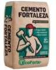

A lo largo del último siglo, México ha experimentado una profunda transformación económica y social, evolucionando desde un sistema mercantil basado en los tradicionales mercados sobre ruedas y tianguis locales hacia la consolidación de gigantescas corporaciones e industrias automatizadas. Este proceso de modernización no borró la identidad nacional, sino que la catapultó a escala masiva. Gracias a la apertura comercial, la manufactura de alta calidad y la visión de empresarios nacionales, las marcas mexicanas lograron estandarizar sus procesos para competir cara a cara en los mercados internacionales más exigentes, convirtiendo a los productos del país en sinónimo de competitividad, alcance logístico global y solidez corporativa.
Grupo Bimbo

Cementos Fortaleza
Oxxo
Grupo Modelo